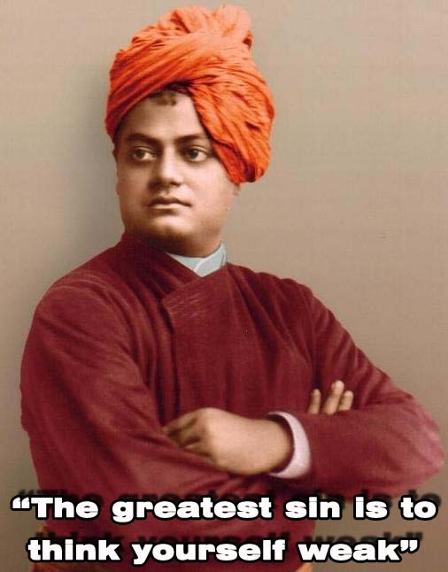

|  |
More than a century ago, a man dared to travel half the globe round to represent his faith at Parliament of World's Religion in Chicago. He went Without an invitation letter and was refused to enter the premises. The Man without appropriate clothing and shelter spent a night in a cardboard box at a railway station, still holding a smile on his face as he had tremendous determination and faith in himself. It was this very man who later shook the whole of America and then Europe with his overarching knowledge, faith and determination to harmonize the world by giving the West the message of spirituality and bringing in material help for his own motherland, India. To mark Swami Vivekananda's Birthday, Vivekananda Samiti is organizing Vivekananda Youth Convention on 15th and 16th January 2011 in the Institute campus. Vivekananda Youth Convention is a unique event taking place for the first time in the Indian Institute of Technology Kanpur. The Convention will be a 2 day event focusing on youth related issues in the campus community. The goal of this convention is to motivate the youth towards social service informed by human values which are essential to face challenges in life. Swami Vivekananda exhorted youth to achieve excellence in their respective fields, science, engineering, medicine, law, business, etc. Since, Swami Vivekananda's teachings have high inspirational value, we wish to introduce our student community to Swami Vivekananda and his teachings. We realize that due to lack of values and inspiration, many students are going through serious emotional problems. We, on behalf of the Institute, wish to address this by motivating the students towards values, service and striving for excellence. The tentative program content is as following:
All the programmes are planned to be organized in Outreach Auditorium. |